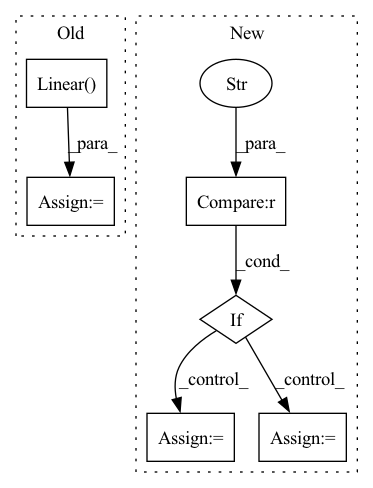

Pattern ID :770

Before Change
assert image_height % patch_size == 0 and image_width % patch_size == 0, "Image dimensions must be divisible by the patch size."
num_patches = (image_height // patch_size) * (image_width // patch_size)
patch_dim = channels * patch_size * patch_size
self.to_patch_embedding = nn.Sequential(
Rearrange("b c (h p1) (w p2) -> b (h w) (p1 p2 c)", p1=patch_size, p2=patch_size),
nn.Linear(patch_dim, emb_dim),
)
//Embedding
self.cls_token = nn.Parameter(torch.randn(1, 1, emb_dim))
After Change
if type == "full":
self.head_depth = HeadDepth(resample_dim)
self.head_segmentation = HeadSeg(resample_dim, nclasses=nclasses)
elif type == "depth":
self.head_depth = HeadDepth(resample_dim)
self.head_segmentation = None
else:
self.head_depth = None
self.head_segmentation = HeadSeg(resample_dim, nclasses=nclasses)
def forward(self, img):
// x = self.to_patch_embedding(img)
In pattern: SUPERPATTERN
Frequency: 3
Non-data size: 6
Instances
Fragment ID: 2560486
Project Name: antocad/focusondepth
Commit Name: 705d8789c4e66dbdbfdd3aeb7f20666f019481dd
Time: 2022-01-03
Author: antoine.cadiou@icloud.com
File Name: FOD/FocusOnDepth.py
Class Name: FocusOnDepth
Method Name: __init__
Parent Class: nn.Module
Fragment ID: 2560564
Project Name: replicable-marl/marllib
Commit Name: 229bfd1c9db33d2ff0761dbdbe21e47a47a9b87c
Time: 2023-02-23
Author: hhhusiyi@163.com
File Name: marllib/marl/models/zoo/rnn/base_rnn.py
Class Name: Base_RNN
Method Name: __init__
Parent Class: TorchRNN,nn.Module
Fragment ID: 2560769
Project Name: rikorose/deepfilternet
Commit Name: 29ca309dcc54dd9da42b84a8c2a658b009f143a1
Time: 2022-04-12
Author: h.schroeter@pm.me
File Name: DeepFilterNet/df/multistagenet.py
Class Name: GruMlp
Method Name: __init__
Parent Class: nn.Module